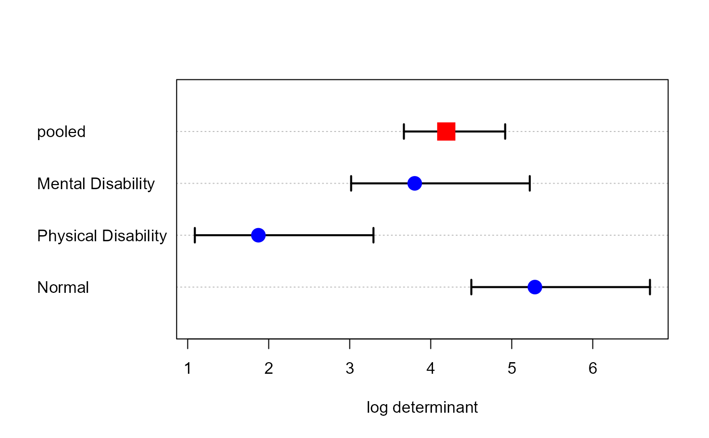

The data, from an exercise given by Meyers et al. (2006) relates to 60 fathers assessed on three subscales of a Perceived Parenting Competence Scale. The fathers were selected from three groups: (a) fathers of a child with no disabilities; (b) fathers with a physically disabled child; (c) fathers with a mentally disabled child.
Format
A data frame with 60 observations on the following 4 variables.
groupa factor with levels
NormalPhysical DisabilityMental Disabilitycaringcaretaking responsibilities, a numeric vector
emotionemotional support provided to the child, a numeric vector
playrecreational time spent with the child, a numeric vector
Source
Meyers, L. S., Gamst, G, & Guarino, A. J. (2006). Applied Multivariate Research: Design and Interpretation, Thousand Oaks, CA: Sage Publications, https://studysites.sagepub.com/amrStudy/, Exercises 10B.
Examples
data(Parenting)
require(car)
# fit the MLM
parenting.mod <- lm(cbind(caring, emotion, play) ~ group, data=Parenting)
car::Anova(parenting.mod)
#>
#> Type II MANOVA Tests: Pillai test statistic
#> Df test stat approx F num Df den Df Pr(>F)
#> group 2 0.94836 16.833 6 112 8.994e-14 ***
#> ---
#> Signif. codes: 0 '***' 0.001 '**' 0.01 '*' 0.05 '.' 0.1 ' ' 1
# Box's M test
boxM(parenting.mod)
#>
#> Box's M-test for Homogeneity of Covariance Matrices
#>
#> data: Y
#> Chi-Sq (approx.) = 28.343, df = 12, p-value = 0.004927
#>
plot(boxM(parenting.mod))

parenting.mod <- lm(cbind(caring, emotion, play) ~ group, data=Parenting)
car::Anova(parenting.mod)
#>
#> Type II MANOVA Tests: Pillai test statistic
#> Df test stat approx F num Df den Df Pr(>F)
#> group 2 0.94836 16.833 6 112 8.994e-14 ***
#> ---
#> Signif. codes: 0 '***' 0.001 '**' 0.01 '*' 0.05 '.' 0.1 ' ' 1
# test contrasts
print(linearHypothesis(parenting.mod, "group1"), SSP=FALSE)
#>
#> Multivariate Tests:
#> Df test stat approx F num Df den Df Pr(>F)
#> Pillai 1 0.5210364 19.94376 3 55 7.1051e-09 ***
#> Wilks 1 0.4789636 19.94376 3 55 7.1051e-09 ***
#> Hotelling-Lawley 1 1.0878413 19.94376 3 55 7.1051e-09 ***
#> Roy 1 1.0878413 19.94376 3 55 7.1051e-09 ***
#> ---
#> Signif. codes: 0 '***' 0.001 '**' 0.01 '*' 0.05 '.' 0.1 ' ' 1
print(linearHypothesis(parenting.mod, "group2"), SSP=FALSE)
#>
#> Multivariate Tests:
#> Df test stat approx F num Df den Df Pr(>F)
#> Pillai 1 0.4293815 13.79555 3 55 8.0113e-07 ***
#> Wilks 1 0.5706185 13.79555 3 55 8.0113e-07 ***
#> Hotelling-Lawley 1 0.7524844 13.79555 3 55 8.0113e-07 ***
#> Roy 1 0.7524844 13.79555 3 55 8.0113e-07 ***
#> ---
#> Signif. codes: 0 '***' 0.001 '**' 0.01 '*' 0.05 '.' 0.1 ' ' 1
heplot(parenting.mod)
# display tests of contrasts
hyp <- list("N:MP" = "group1", "M:P" = "group2")
heplot(parenting.mod, hypotheses=hyp)
# make a prettier plot
heplot(parenting.mod, hypotheses=hyp, asp=1,
fill=TRUE, fill.alpha=c(0.3,0.1),
col=c("red", "blue"),
lty=c(0,0,1,1), label.pos=c(1,1,3,2),
cex=1.4, cex.lab=1.4, lwd=3)
 pairs(parenting.mod, fill=TRUE, fill.alpha=c(0.3, 0.1))
pairs(parenting.mod, fill=TRUE, fill.alpha=c(0.3, 0.1))
 if (FALSE) { # \dontrun{
heplot3d(parenting.mod, wire=FALSE)
} # }
if (FALSE) { # \dontrun{
heplot3d(parenting.mod, wire=FALSE)
} # }